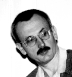

http://www.smc.univie.ac.at/personal/neuwirth/
erich.neuwirth@univie.ac.at
Erich Neuwirth teaches mathematics, statistics, and computer science an the
University of Vienna. He is an amateur musician and composer who even managed to
be performed at "Grosser Musikvereinssaal" in Vienna. One of his research fields
is connections between mathematics an music, and he is especially interested in
the mathematical theory of musical temperaments. For his book+cdrom "Musical
Temperaments" he won the European Academic Software Award 1996.
Erich Neuwirth
Computer Supported Didactics Working Group
University of Vienna
Universitaetsstr. 5-9
Vienna, Austria, A-1010